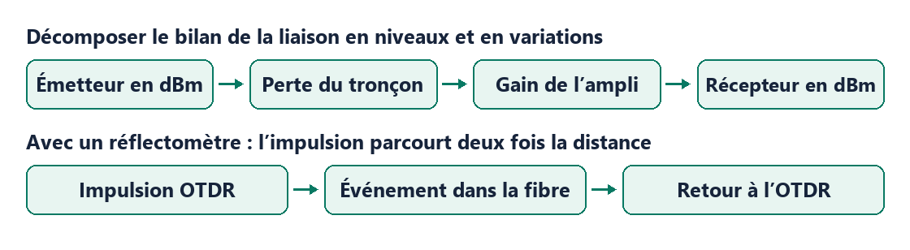
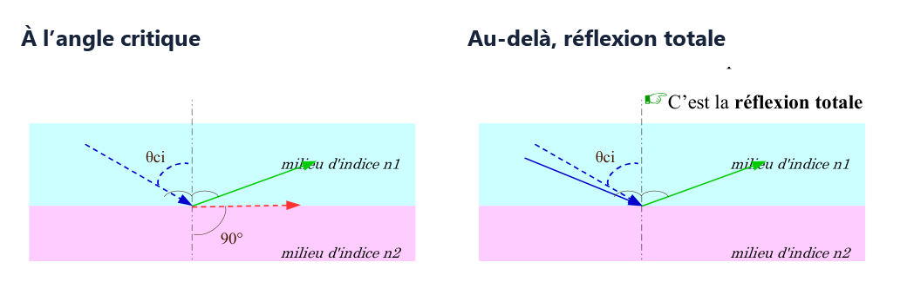

Comprendre le cours
1. Quelle distance parcourt l’onde ?
La fréquence f compte les cycles par seconde. La période d’un cycle vaut 1/f, et la longueur d’onde λ vaut v/f, avec v la vitesse dans le milieu. Dans le vide, v≈3×10⁸ m/s. Dans un milieu d’indice n, on prend v≈c/n pour les calculs élémentaires. Le temps de propagation vaut L/v.
Une charge crée un champ électrique. Dans le modèle de Coulomb, deux charges ponctuelles exercent une force proportionnelle au produit des charges et inversement proportionnelle au carré de la distance. Le champ E donne la force par unité de charge d’essai positive. Un courant crée un champ magnétique. Autour d’un fil rectiligne, utilise la règle de la main droite pour le sens.
Pour une onde plane, E et H sont perpendiculaires à la direction de propagation. La polarisation décrit l’orientation du champ électrique. Deux antennes mal alignées peuvent créer une perte même si le niveau à l’émission n’a pas changé.
2. Faire un bilan sans mélanger dB, dBm et watts

| Grandeur | Calcul | Lecture |
|---|---|---|
| Puissance en dBm | 10 log₁₀(P / 1 mW) | 5 mW vaut environ 7 dBm. |
| Perte en dB | 10 log₁₀(Pentrée / Psortie) | Une perte positive se soustrait. |
| Perte de fibre | α × L | Si α est en dB/km, prends L en km. |
| Marge | Préception − sensibilité | Différence en dB, même si les deux valeurs sont en dBm. |
Enchaîne les éléments dans l’ordre, en ajoutant les gains et en retirant les pertes. L’hypsogramme trace cette puissance le long de la liaison. Une pente représente la perte répartie du support, une marche peut représenter un connecteur ou un amplificateur.
3. Pourquoi une fibre guide et déforme le signal


La loi de Snell-Descartes relie les angles par n₁sinθ₁ = n₂sinθ₂, avec les angles mesurés depuis la normale à l’interface. Au passage du cœur à la gaine, n₁>n₂. Au-delà de l’angle critique sinθc=n₂/n₁, la réflexion devient totale. L’ouverture numérique décrit l’angle d’entrée accepté depuis l’air.
Une fibre multimode permet plusieurs trajets ou modes. Des arrivées à des instants différents élargissent une impulsion. Une fibre monomode réduit la dispersion intermodale, mais la vitesse peut encore varier avec la longueur d’onde. Vérifie séparément la puissance disponible et l’étalement temporel.
4. Combiner des fibres, des canaux et des amplificateurs
- Un coupleur partage la puissance. En partage idéal 1 vers 2 et 50/50, chaque branche reçoit la moitié, soit environ −3 dB sans perte excédentaire.
- Un multiplexeur WDM rassemble différentes longueurs d’onde sur une fibre, et le démultiplexeur les sépare à l’arrivée.
- Un amplificateur ajoute un gain dans la plage prévue. Vérifie sa puissance d’entrée et cumule ses effets avec les pertes de chaque section.
Une mesure d’insertion compare l’entrée et la sortie. Un OTDR, ou réflectomètre optique, observe ce qui revient avec le temps. Il estime la distance par vΔt/2. La pente du tracé donne la perte répartie, et les événements marquent des effets locaux comme une soudure, un connecteur ou une fin de fibre.
5. Lire le banc de mesure
Sur un câble coaxial, une désadaptation entre la ligne et la charge renvoie une partie de l’onde. Le coefficient de réflexion en tension est Γ=(ZL−Z₀)/(ZL+Z₀) dans le modèle de ligne. Une adaptation idéale donne Γ=0. Sur un banc à deux ports, S11 décrit la réflexion au port d’entrée et S21 la transmission vers le second port dans les conditions de mesure.
Un diagramme d’antenne décrit comment la réception ou le rayonnement varie avec l’angle, dans un plan fixé. Compare les mesures à distance et polarisation constantes. En télévision, le niveau est un indicateur parmi d’autres. Le verrouillage du démodulateur et les mesures d’erreur renseignent le décodage du signal numérique.
Calculer et orienter les champs du TD4
Pour une charge ponctuelle q à distance r dans l’air, le champ électrique a pour module k|q|/r² avec k≈9×10⁹ N·m²/C². Convertis les longueurs en mètres et les charges en coulombs. Dessine l’axe qui passe par la source et le point demandé. La flèche s’éloigne d’une charge positive et se dirige vers une charge négative. Si une charge d’essai q′ est indiquée, sa force est q′E. Une charge d’essai négative subit donc une force opposée au champ.
Pour des sources multiples, dessine une flèche pour chaque source, puis projette sur les axes et additionne les composantes avec leurs signes. Dans un exemple d’application, +2 nC à 0,30 m donne 200 V/m. Si une autre contribution vaut 150 V/m dans le sens opposé sur le même axe, le résultat vaut 50 V/m dans le sens de la première flèche.
Près d’un fil rectiligne supposé long, H = I/(2πr) en A/m et B = μH en teslas. Le pouce suit le courant et les doigts indiquent le sens du champ. Dans l’exercice à deux fils, dessine les deux cercles qui passent par le point étudié. Les champs sont tangents à ces cercles. Décide d’après les flèches s’il faut additionner ou soustraire sur l’axe commun.
Du cours aux TD et TP
Support croisé · Les trois chapitres du poly R306, les quatre TD et les sept TP de Télécom 3.
| Notion du cours | Où la travailler | Ce que tu dois savoir refaire |
|---|---|---|
| Propagation, polarisation et ondes | Poly ch. 1, TP7 antennes | Passer de fréquence à longueur d’onde. Tenir distance et polarisation constantes pendant une mesure angulaire. |
| Guidage et temps de propagation | Poly ch. 2, TD1 et TP5 | Calculer l’ouverture et le seuil de réflexion, puis distinguer retard, dispersion et perte. |
| Coupleurs, WDM et amplification | Poly ch. 2, TD2–3 | Appliquer le partage de puissance, placer les gains et conserver une marge à la réception. |
| Mesures optiques et électriques | TP4–6 | Régler le mesureur TV, interpréter un retour OTDR et comparer les paramètres S11 et S21 du câble. |
| Champs électriques et magnétiques | Poly ch. 3, TD4 | Déterminer signe, direction et ordre de grandeur. Additionner les composantes des contributions au point demandé. |
| Mesure en modulation numérique | TP1–3 | Régler le déclenchement, lire les deux voies d’oscilloscope et distinguer ce qui change en ASK, FSK et PSK. |
Questions TD & TP
TD1 · Puissance, ouverture numérique et retard
Énoncé. Calculer la puissance de sortie pour deux longueurs et deux longueurs d’onde, puis retrouver l’angle d’entrée d’une fibre.
- Lis α à 1310 et 1550 nm dans le tableau du sujet. Multiplie chaque valeur par 0,2 km puis par 1,35 km. Pour une puissance d’entrée de 25 µW, calcule
25 × 10⁻⁶ × 10^(−perte/10)en W dans chacun des quatre cas. - Pour n₁=1,50 et n₂=1,48, ON=√(1,50²−1,48²)≈0,244. Dans l’air, θentrée max≈arcsin(0,244)=14,1°. Distingue cet angle d’entrée de l’angle critique mesuré par rapport à la normale cœur–gaine.
- Sur 100 m, le rayon axial met L n₁/c≈500 ns. Pour le rayon limite, la longueur parcourue est L/cosθaxe avec cosθaxe=n₂/n₁ dans le modèle du TD. On obtient environ 506,76 ns et un étalement d’environ 6,76 ns. En ne tenant compte que de cet étalement, il faut espacer les impulsions d’environ 6,76 ns ou plus, soit une limite de l’ordre de 148 millions d’impulsions par seconde.
TD1, exercice 7 · Mesurer la perte d’une fibre de 500 m
Énoncé. Une fibre G.657 de 500 m fait passer le niveau de −8,83 à −9,34 dBm. Décris l’insertion et calcule l’atténuation puis le dB par kilomètre.
- Mesure d’abord le niveau de référence avec les cordons du banc, puis insère la fibre en gardant les autres réglages. Le niveau passe de −8,83 dBm à −9,34 dBm.
- La perte d’insertion vaut −8,83 − (−9,34) = 0,51 dB. Le signe est positif puisque le niveau diminue. La différence de deux niveaux en dBm est un rapport exprimé en dB.
- Rapporte 0,51 dB à 0,500 km pour trouver 1,02 dB/km. Cette mesure représente la liaison insérée. Si les raccordements ont changé, leur perte peut contribuer au résultat.
TD2 · Répartir, multiplexer et comparer les puissances
Énoncé. Expliquer ce qui arrive à la puissance lors du passage dans un répartiteur, un multiplexeur ou un amplificateur.
- Le répartiteur 10/90 du TD envoie 0,1 × P vers le port 2 et 0,9 × P vers le port 3. En dB, retire respectivement 10 dB et environ 0,46 dB au niveau d’entrée. Retranche aussi la perte excédentaire si l’énoncé en donne une.
- Pour WDM, suis chaque longueur d’onde vers son port, avec la perte indiquée pour cette voie. Additionne uniquement les puissances linéaires si le sujet demande une puissance totale.
- Sur l’amplificateur, applique le gain en dB et vérifie la plage de puissance autorisée à l’entrée et à la sortie.
TD3 · Fermer le bilan optique de 220 km
Énoncé. Vérifier si la sensibilité et la marge sont respectées, puis placer les amplificateurs de 5 dB.
- 5 mW → 6,99 dBm. Perte sur 220 km → 0,4×220=88 dB. Sans amplificateur, la réception vaut −81,01 dBm. Il faut au moins −33 dBm pour avoir 3 dB de marge au-dessus de −36 dBm.
- Le déficit vaut 48,01 dB. Arrondis (48,01/5) à l’entier supérieur : 10. Avec dix gains de 5 dB, l’arrivée vaut −31,01 dBm dans ce modèle.
- Le premier amplificateur reçoit −35 dBm après environ (6,99+35)/0,4≈105 km. Ensuite, 5/0,4=12,5 km ramènent à −35 dBm. Le dixième se place vers 217,5 km. Sur le dessin, chaque amplification fait monter la courbe de 5 dB.
TD · Champs autour d’une charge et d’un fil
Énoncé. Déterminer la direction du champ électrique, puis celle du champ magnétique près d’un conducteur.
- Trace le vecteur qui va de la charge source vers le point d’observation. Pour une charge positive, E suit ce sens. Pour une charge négative, E pointe vers la charge. Si plusieurs charges contribuent, ajoute les vecteurs par composantes.
- Pour un fil rectiligne idéal, le champ magnétique est tangent aux cercles centrés sur le fil. Oriente le pouce dans le sens du courant pour obtenir le sens avec les doigts. Une inversion du courant inverse le champ.
- Pour deux conducteurs parallèles, trace séparément les deux champs au point demandé. Additionne s’ils sont dans le même sens ou soustrais les composantes opposées.
TP1 à TP3 · QPSK, codage et modulation
Énoncé. Mesurer la constellation IQ, reconnaître les symboles du codage bande de base et comparer ASK, FSK et PSK.
- Au TP1, branche les voies I et Q sur les deux entrées et passe en XY. Relève les coordonnées utiles et associe les dibits avec la table du banc. Contrôle le signe des deux voies et relève le niveau demandé en tension efficace.
- Au TP2, utilise un déclenchement stable. Repère deux frontières consécutives et mesure la durée d’un symbole. Rappelle la relation inverse entre durée et rapidité, puis lis les transitions du codage demandé.
- Au TP3, observe le signal modulant puis le résultat du multiplieur. En ASK, compare les amplitudes de l’enveloppe. En FSK, mesure la fréquence sur chaque état. En PSK, compare la phase avec une référence commune.
TP4 · Mesurer la réception télévision et satellite
Énoncé. Régler le mesureur SEFRAM et relier le niveau, la qualité et la réception au choix des paramètres.
- Sélectionne le mode et l’entrée prévus pour le montage. En satellite, utilise la fiche de l’annexe et règle fréquence, polarisation et débit symbole du transpondeur demandé.
- Vérifie le verrouillage, puis note les indications de niveau et de qualité au même point de mesure. Une puissance affichée avec aucun verrouillage demande de reprendre les paramètres.
- Compare les points et les montages du sujet, en notant le port mesureur et la chaîne utilisée. Garde les valeurs que tu as réellement lues.
TP5 · Mesurer une liaison fibre à l’OTDR
Énoncé. Relever les événements, longueurs et pertes avec les réglages de mesure correctement identifiés.
- Connecte la fibre et les amorces prévues. Identifie longueur d’onde, indice, portée et largeur d’impulsion. Lance une première trace et repère les portions utiles.
- Place les curseurs de part et d’autre du tronçon pour estimer longueur et perte. Pour un connecteur, utilise les portions stables autour de l’événement. Divise la perte du tronçon par sa longueur en km pour obtenir le dB/km.
- Compare deux largeurs d’impulsion. Une impulsion plus large permet généralement de voir plus loin, mais peut fusionner des événements proches. Pour un temps aller-retour, divise vΔt par deux.
TP6 et TP7 · Câble RG58 et antenne
Énoncé. Comparer pertes et réflexion du coaxial, puis tracer le diagramme de réception.
- Pour le câble, règle la plage de fréquence du sujet et utilise la référence ou calibration du banc. Relève la transmission et la réflexion en conservant la même fréquence et les mêmes conditions lors des comparaisons.
- Pour l’antenne, maintiens distance et polarisation. Change l’angle sans déplacer le reste du montage, relève les niveaux et normalise-les au maximum si demandé. Lis le lobe principal et son ouverture au seuil utilisé dans le TP.
- Compare mesure et simulation dans le même plan. Les réflexions de la salle, les câbles et l’alignement peuvent déplacer les creux ou changer le niveau.